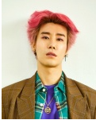

201920995 김진광 자기소개서
<목차>
- 나는 누구인가
- 광주에 대한 소개
- 나의 취미와 좋아하는 것
- 학교생활
<나는 누구인가>
- 2000년 1월 12일생
- 광주광역시에서 태어나 대학오기 전까지 광주에서 삶을 보냄
- 현재 상명대학교 소프트웨어학과 재학중
- 2남 중 둘째
- 이번 학기 시간표
- 시화🌺 : 철쭉
- 시조🕊️ : 비둘기
- 시목🌳 : 은행나무
- 인구 약 150만
- 북동쪽으로 담양군, 북쪽으로 장성군, 서쪽으로 함평군, 남쪽으로 나주시, 남동쪽으로 화순군에 접해있음
- 호남지방 최대의 도시
- 무등산, 충장로, 펭귄마을 등 여러 볼거리가 있음
<나의 취미와 좋아하는 것>
[ 소소한 취미 ]
판타지 소설 읽기
날씨 좋은 날 산책하기
인디음악과 팝송 찾아 듣기
노래방가서 노래부르기
친구들과 보드게임 즐기기
불꽃놀이 보러가기(소리 주의)
🐈고양이, 강아지와 놀기🐕(고양이카페 다니기)
<랜선 집사 되러가기>
🎤힙합 감상하기🎤
- Aqua man듣기
- Always Awake듣기
- Blurry 듣기

<학교 생활>
- 1학년 때 학생회를 하며 여러 재미있는 일을 했었음
- 가장 재미있던 일은 축제 일을 하며 축제를 즐긴 것
- 대학 콘서트를 처음 접해보고 왜 콘서트를 보는지 알게 되었음
♬다이나믹 듀오♬
- 이번 학년 과 대표를 맡으면서 더 열심히 해야겠다고 다짐함
작성자: 201920995 소프트웨어학과 김진광